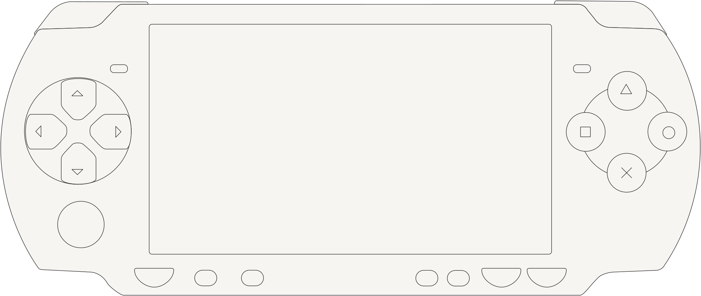
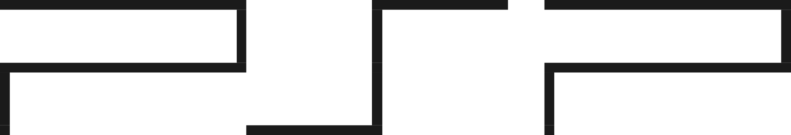

Drop here or click to choose
Your own The Simpsons: Hit & Run PS2 disc image (.iso), PAL or NTSC
Release to start
The disc is checked first, nothing is copied yet
Checking
Reading the disc
Looking for SLES 518.97 or SLUS 206.24
Step 1 of 9
Unpacking the disc
0% about an hour left
Keep the computer plugged in and the Terminal window open. Run the same line again to pick up where it stopped
Ready
SHAR for PSP is built
3.3 GB, seven levels, movies and sound
Memory Stick
Copying to PSP
0% only changed files
Do not unplug the PSP until this finishes
On your PSP
Unplug it and play
Game › Memory Stick › The Simpsons Hit & Run
Not this disc
This is a different game
Expected The Simpsons: Hit & Run, SLES 518.97 (PAL) or SLUS 206.24 (NTSC)